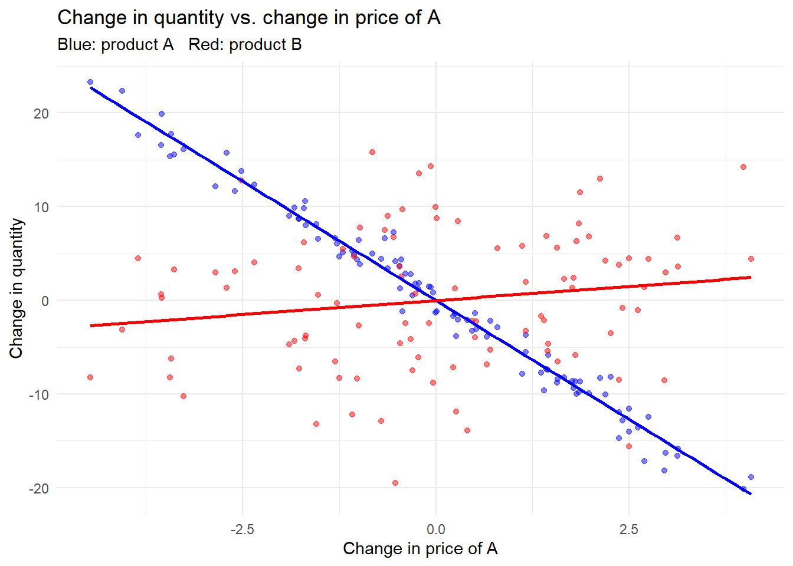

flowchart TD
A[Idea / Question<br/>literature or world] --> B[Model consumer demand]
B --> C[Profit maximization<br/>subject to constraints]
C --> D[Game-theoretic equilibrium<br/>among firms]
D --> E[Comparative statics<br/>& counterfactuals]
E --> F[Welfare & policy<br/>evaluation]
F -.->|do results make<br/>intuitive sense?| B
36 Industrial Organization
Industrial organization (IO) studies how firms behave in markets, how that behavior maps into prices, product variety, and welfare, and how researchers can recover the deep parameters—preferences, costs, conduct—that generate observed market outcomes. For marketing, IO is the structural backbone: it supplies the demand systems that price a product line, the equilibrium concepts that turn one firm’s pricing problem into an industry forecast, and the identification arguments that let an analyst run counterfactuals—what would happen to prices, shares, and surplus if two firms merged, if a new product entered, or if a regulator capped a fee. Where reduced-form marketing analytics describe correlations, structural IO builds an economic model whose estimated primitives remain invariant under the policy change being studied, so that the model can be re-solved under the new regime.
This chapter develops the toolkit in the order a modeler actually uses it. It opens with the methodological frame: the core questions of IO, the modeling tools (demand, constrained profit maximization, game theory, comparative statics), and the discipline of turning a question into a solvable model. It then builds consumer demand from two directions. The classical approach treats a representative consumer choosing continuous quantities, yielding the elegant Slutsky/Roy machinery, the CES and quasi-linear special cases, diversion ratios, and the homothetic-surplus family that makes multiproduct pricing tractable. The discrete-choice approach treats heterogeneous consumers each picking one option from a menu, which is how modern empirical IO and quantitative marketing estimate demand for differentiated products. We give each model its formal definition, its estimator, its identifying assumptions, and the failures that break identification—price endogeneity, zero-valued shares, selection on unobservables—and we close with the frontier applications in marketing: dynamic pricing of new products, behavioral price discrimination in channels, email contact policy, and multi-sided platforms. Code is runnable and seeded throughout. The companion structural-econometrics machinery appears in Chapter 22 and in the demand-estimation discussions elsewhere in the book; here the emphasis is on the economic models themselves.
36.1 The IO Research Program
Three questions organize the field. First, why do firms behave as we observe—why this price, this product line, this bundle, this contract? Second, what are the effects of that behavior on consumers, rivals, and employees, and against which welfare standard should those effects be judged? Third, how can we design better strategy for firms and better policy for regulators? The first question is positive, the second normative, and the third prescriptive; a complete IO study usually touches all three, because a counterfactual that improves firm profit and one that improves consumer surplus are different optimizations over the same estimated model.
Three methodological approaches answer these questions and are complementary rather than competing. The theoretical approach builds a model and derives predictions; the empirical approach estimates the model from data, tests its predictions, and runs counterfactual and welfare analysis; the experimental and behavioral approach manipulates conditions to isolate causal mechanisms and to discipline the behavioral assumptions the other two impose. The structural empirical tradition that dominates this chapter fuses the first two: it writes down a theoretical model of demand and conduct, then estimates its primitives so the model can be re-solved under hypothetical policies.
36.1.1 Building an IO Model
A study begins with an idea—a question drawn from the literature in IO and adjacent fields, or from the world (a news item, a consulting engagement, an unexplained pattern in data). The idea is then expressed through a small set of modeling tools that recur across nearly every IO paper, summarized in Figure 36.1.
The first tool is a model of consumer demand for the products or services in question. The modeler decides whether consumers choose among single or multiple products, single or multiple units, and whether products are differentiated—and if so, whether they are substitutes or complements, and whether differentiation is vertical (everyone agrees more is better, as with quality) or horizontal (consumers disagree about the ideal variety, as with location or flavor). Demand complementarities deserve special attention because they reshape strategy: when products are complements, raising one price depresses demand for both, so a monopolist who internalizes the cross-effect charges lower prices than two independent firms would, and the complementarity can itself become a barrier to entry. Network effects, multi-sided markets, and ecosystems are demand complementarities operating across consumers or across platform sides rather than within a single basket.
The second tool is profit maximization subject to constraints. The modeler specifies choice variables and an objective, then layers on the constraints that make the problem economically interesting: technology constraints from the cost side; consumer participation constraints (the consumer must prefer buying to not buying), which rationalize bundling and tied selling and let contracts act as entry barriers; arbitrage constraints that limit price discrimination across consumers who can resell; and incentive constraints in principal–agent settings, which generate second-degree price discrimination (self-selection across a menu) and franchise contracts. The third tool is game theory, treated next. The fourth is comparative static analysis: with exogenous parameters and policy variables on one side and endogenous equilibrium variables on the other, the modeler asks how the optimum or equilibrium shifts as a parameter moves—the formal content of every “what if” the study can answer.
36.1.2 Game-Theoretic Models
Strategic interaction among firms is modeled non-cooperatively or cooperatively. Non-cooperative models come in two forms. Normal-form (simultaneous-move) games specify a set of players, a strategy set for each, and a payoff function for each, and solve for Nash equilibrium in whatever strategic variable is relevant—price (Bertrand), quantity (Cournot), capacity, advertising, or location. Extensive-form (sequential-move) games capture first-mover advantages, entry deterrence, and collusion sustained through repeated interaction, where the threat of future punishment supports prices above the static equilibrium. Cooperative models, used heavily in channel and platform settings, center on Nash bargaining: two parties split the gains from agreement according to their bargaining power, relative to a threat point (the disagreement payoff). The Nash-in-Nash refinement embeds bilateral Nash bargains inside a larger non-cooperative game—each upstream–downstream pair bargains taking all other negotiated prices as given—and has become the workhorse for modeling negotiated wholesale prices in vertical markets.
A profile of strategies is a Nash equilibrium if no player can raise its own payoff by unilaterally deviating, holding all rivals’ strategies fixed. In a pricing game this means each firm’s price is a best response to its rivals’ prices, so the equilibrium price vector solves all firms’ first-order conditions simultaneously.
The output of this machinery is a set of results, after which—per the discipline of the field—the modeler pauses to ask whether the results make intuitive sense before trusting them. A written IO study then motivates the question (with examples, statistics, prior work, and policy stakes), states the approach and headline findings, constructs the model, derives the equilibrium and its comparative statics, and closes with limitations and extensions.
36.2 Consumer Demand
The central modeling primitive is a demand system: a description of how the quantities consumers buy respond to firms’ offers—prices, qualities, versions, advertising, warranties. Three questions drive the demand modeler. How should demand be formally specified given the product and the market? What properties must a demand system (more than one product) satisfy to be internally consistent? And how can the system be estimated so that own-price elasticities, cross-price elasticities, and diversion ratios can be computed and fed into a pricing or merger analysis?
Demand is fundamentally a matching process between a population of consumers—each with observable and unobservable characteristics—and a set of products with their own observable and unobservable characteristics. The microeconomics and IO literatures offer three routes through this matching problem: classical consumer theory with continuous choices; discrete-choice models with heterogeneous tastes, which accommodate horizontal differentiation, vertical differentiation, or both; and hybrid discrete–continuous models in which the consumer first chooses which product and then how much. The next two parts develop the classical and discrete-choice routes in turn.
36.3 Classical Consumer Demand
A representative consumer with utility \(U(q_0, q_1, \dots, q_n)\) and income \(I\), facing prices \(\mathbf{p} = (p_1, \dots, p_n)\), chooses continuous quantities \(\mathbf{q} = (q_1, \dots, q_n)\) to solve
\[ \max_{q_0, \dots, q_n} \; U(q_0, q_1, \dots, q_n) \quad \text{s.t.} \quad q_0 + \sum_{i=1}^n p_i q_i \le I, \tag{36.1}\]
where \(q_0\) is a numeraire good with normalized price \(p_0 = 1\). The solution is the Walrasian (or Marshallian) demand system \(q_i = D_i(\mathbf{p}, I)\), and substituting it back into \(U\) gives the indirect utility \(V(\mathbf{p}, I)\).
This system is not an arbitrary set of functions; it inherits a rigid structure from optimization, and that structure is what makes the classical approach powerful. Two identities encode it. Roy’s identity recovers demand from the indirect utility,
\[ q_i(\mathbf{p}, I) = -\,\frac{\partial V / \partial p_i}{\partial V / \partial I}, \tag{36.2}\]
so the entire demand system is implicit in a single scalar function \(V\). The Slutsky equation decomposes the response of demand to a price change into a substitution effect (the compensated, or Hicksian, derivative \(\partial h_i / \partial p_j\)) and an income effect,
\[ \frac{\partial h_i(\mathbf{p}, u)}{\partial p_j} = \frac{\partial q_i(\mathbf{p}, I)}{\partial p_j} + \frac{\partial q_i(\mathbf{p}, I)}{\partial I}\, q_j(\mathbf{p}, I). \tag{36.3}\]
The matrix of compensated derivatives—the Slutsky substitution matrix—is symmetric and negative semi-definite. Symmetry is the testable fingerprint of utility maximization: absent income effects, the cross-price response of good \(i\) to \(p_j\) equals that of good \(j\) to \(p_i\). Negative semi-definiteness encodes the law of demand, that compensated own-price effects are non-positive.
36.3.1 CES Sub-Utility and the Taste for Variety
A leading special case separates the numeraire from a bundle of differentiated goods, \(U = U(q_0, Q)\), with the differentiated goods aggregated by a constant elasticity of substitution (CES) sub-utility. Taking \(U = q_0 Q\) with
\[ Q = \Big( \sum_{i=1}^n q_i^{\rho} \Big)^{1/\rho}, \qquad \rho \le 1, \tag{36.4}\]
delivers the CES demand system. The parameter \(\rho\) controls substitutability: the elasticity of substitution is \(1/(1-\rho)\), so \(\rho \in (0,1)\) makes the goods imperfect substitutes (elasticity above one), \(\rho \to 1\) makes them perfect substitutes, and \(\rho \to 0\) approaches Cobb–Douglas. The CES form is the standard tool for studying product variety, because the consumer values having many distinct varieties even at equal total quantity—the “love of variety” that justifies entry of differentiated competitors.
To derive demand, write the consumer problem over \(n+1\) goods with the multiplicative specification
\[ U = q_0 \Big[ \sum_{i=1}^n q_i^{\rho} \Big]^{1/\rho}, \qquad \rho \in (0,1), \]
subject to the budget \(P_0 q_0 + \sum_{i=1}^n P_i q_i = M\). The Lagrangian is
\[ \mathcal{L} = q_0 \Big[ \sum_{i=1}^n q_i^{\rho} \Big]^{1/\rho} + \lambda \Big( M - P_0 q_0 - \sum_{i=1}^n P_i q_i \Big). \]
The first-order condition for the numeraire, \(\partial \mathcal{L}/\partial q_0 = \big[\sum_i q_i^{\rho}\big]^{1/\rho} - P_0\lambda = 0\), identifies the marginal utility of income with the aggregate \(Q\) scaled by price, \(\big[\sum_i q_i^{\rho}\big]^{1/\rho} = P_0 \lambda\). The condition for a differentiated good,
\[ \frac{\partial \mathcal{L}}{\partial q_i} = q_0 \Big[ \sum_{i=1}^n q_i^{\rho} \Big]^{1/\rho - 1} q_i^{\rho - 1} - P_i \lambda = 0, \]
gives \(q_0 \big[\sum_i q_i^{\rho}\big]^{1/\rho - 1} q_i^{\rho-1} = P_i \lambda\). Dividing the two conditions eliminates \(\lambda\) and yields the direct CES demand; solving instead for \(P_i\) yields the inverse demand. The economic reading is the one above: with \(\rho \in (0,1)\) the varieties are imperfect substitutes.
36.3.2 Quasi-Linear Utility and the Absence of Income Effects
A second special class drops income effects entirely. With quasi-linear utility,
\[ U = q_0 + u(q_1, \dots, q_n), \tag{36.5}\]
substituting the budget constraint turns the consumer problem into
\[ \max_{q_1, \dots, q_n} \; u(q_1, \dots, q_n) - \sum_{i=1}^n p_i q_i + I, \]
with first-order conditions \(\partial u / \partial q_i = p_i\). Because \(I\) enters additively, the demands for the \(n\) differentiated goods are independent of income (provided income is large enough that \(q_0 > 0\)). All income is absorbed by the numeraire, and the maximized utility is \(V = v(p_1, \dots, p_n) + I\), where \(v(\cdot)\) is the consumer-surplus function. This additive separability is what makes quasi-linear utility the default for welfare analysis in IO: changes in consumer surplus are read directly off \(v\), untangled from income.
The structure delivers three results used repeatedly below. First, demand is the negative gradient of surplus, \(-\partial v / \partial p_i = q_i(\mathbf{p})\), a special case of Roy’s identity (Equation 36.2). Second, the Jacobian of the demand system, \(J = \big( \partial q_i(\mathbf{p}) / \partial p_j \big)_{n \times n}\), is symmetric and negative semi-definite—the Slutsky matrix (Equation 36.3) stripped of income terms. Third, the construction can be reverse-engineered: if an observed demand system has a symmetric, negative-definite Jacobian, it is rationalizable by a representative consumer maximizing a concave quasi-linear utility, recovered by substituting the inverse demand into the first-order conditions and integrating the resulting system of partial differential equations \(\partial u / \partial q_i = p_i(q)\). Recovering \(u\) in turn enables exact welfare statements.
36.3.2.1 Substitutes, Complements, and Diversion
With \(n = 2\), the sign of the cross-effect classifies the goods. They are demand-substitutes if good \(j\)’s demand rises with \(p_i\) and demand-complements if it falls. Applying Cramer’s rule to the first-order conditions of quasi-linear maximization,
\[ |J|\, \frac{\partial q_1}{\partial p_2} = |J|\, \frac{\partial q_2}{\partial p_1} = -\,u_{12} = -\,u_{21}, \tag{36.6}\]
where \(|J| > 0\) by negative definiteness (strict concavity of \(u\)). The products are therefore demand-substitutes when \(u_{12} = u_{21} < 0\) and demand-complements when \(u_{12} = u_{21} > 0\): the sign of the utility cross-partial governs the substitution relationship.
The diversion ratio quantifies substitution and is the single most important demand statistic in merger analysis. For imperfect substitutes, it measures how much of the demand lost from raising \(p_1\) is recaptured by product 2,
\[ d_{12} = \frac{\partial q_2 / \partial p_1}{-\,\partial q_1 / \partial p_1} > 0. \tag{36.7}\]
Intuitively, if a consumer prefers coffee brand A but buys brand B when A’s price rises (or A is out of stock), sales “divert” from A to B; \(d_{12}\) is the fraction of A’s lost sales that lands on B. Negative definiteness of the substitution matrix imposes a discipline on the pair of diversion ratios,
\[ \frac{\partial q_1}{\partial p_1}\frac{\partial q_2}{\partial p_2} - \frac{\partial q_2}{\partial p_1}\frac{\partial q_1}{\partial p_2} > 0 \quad \Longleftrightarrow \quad d_{12}\, d_{21} < 1, \]
so two goods cannot each divert most of their lost sales to the other. The empirically estimable version, for products \(A\) and \(B\) with quantities and prices \((Q_A, P_A, Q_B, P_B)\), is
\[ D_{AB} = \frac{\Delta Q_B / \Delta P_A}{\Delta Q_A / \Delta P_A}, \tag{36.8}\]
the change in \(B\)’s quantity per unit change in \(A\)’s price, normalized by \(A\)’s own quantity response. The following seeded example simulates two products and estimates the diversion ratio from first differences.
set.seed(123)
n <- 100
price_A <- runif(n, 5, 10)
price_B <- runif(n, 5, 10)
quantity_A <- 100 - 5 * price_A + rnorm(n)
quantity_B <- 80 - 4 * price_B + rnorm(n)
# Diversion ratio from first differences (eq. of D_AB)
delta_QA <- diff(quantity_A)
delta_PA <- diff(price_A)
delta_QB <- diff(quantity_B)
D_AB <- mean(delta_QB / delta_PA) / mean(delta_QA / delta_PA)
D_AB
#> [1] 4.606575library(ggplot2)
plot_df <- data.frame(delta_PA, delta_QA, delta_QB)
ggplot(plot_df, aes(x = delta_PA)) +
geom_point(aes(y = delta_QA), color = "blue", alpha = 0.5) +
geom_point(aes(y = delta_QB), color = "red", alpha = 0.5) +
geom_smooth(aes(y = delta_QA), method = "lm", color = "blue", se = FALSE) +
geom_smooth(aes(y = delta_QB), method = "lm", color = "red", se = FALSE) +
labs(x = "Change in price of A", y = "Change in quantity",
title = "Change in quantity vs. change in price of A",
subtitle = "Blue: product A Red: product B") +
theme_minimal()
36.3.3 The Linear Demand System from Quadratic Utility
The most-used closed-form demand system comes from a quasi-linear quadratic utility. Over two differentiated goods,
\[ U(q_0, q_1, q_2) = q_0 + \alpha_1 q_1 + \alpha_2 q_2 - \tfrac{1}{2}\big[ \beta_1 q_1^2 + 2\gamma\, q_1 q_2 + \beta_2 q_2^2 \big], \tag{36.9}\]
with \(\alpha_i > 0\), \(\beta_i > 0\), and \(\beta_1 \beta_2 - \gamma^2 > 0\) (concavity). The first-order conditions are the inverse (linear) demands,
\[ p_1 = \alpha_1 - \beta_1 q_1 - \gamma q_2, \qquad p_2 = \alpha_2 - \beta_2 q_2 - \gamma q_1, \tag{36.10}\]
and inverting this linear system gives the direct demands with constant diversion ratios. The cross-partial of utility is exactly \(\partial^2 U / \partial q_1 \partial q_2 = \gamma\), so \(\gamma\) is the substitution parameter: under the sign convention of Equation 36.6, a positive cross-partial signals complements and a negative one signals substitutes. Two parameterization styles appear in practice. Treating \(\gamma\) as a free parameter captures the relationship directly and flexibly. Tying the curvature to substitution by setting \(\beta_1 = \beta_2 = 1 - \gamma\) is more parsimonious but restrictive: it forces own-curvature to move with the cross-effect, which can be arbitrary when theory offers no guidance.
36.3.3.1 The Shubik–Levitan Normalization
A subtle defect of the raw quadratic form is that adding products mechanically changes the scale of demand. Richard and Martin (1980) propose a normalization that separates the number of products from their substitutability. With
\[ u(q_1, \dots, q_n) = \alpha \sum_{i=1}^n q_i - \frac{n}{2(1+\gamma)}\Big[ \sum_{i=1}^n q_i^2 + \frac{\gamma}{n}\Big( \sum_{i=1}^n q_i \Big)^2 \Big], \tag{36.11}\]
where \(\alpha > 0\) and \(\gamma \in [0, \infty)\) indexes substitutability, the demand system becomes
\[ q_i = \frac{1}{n}\Big[ \alpha - p_i(1+\gamma) + \frac{\gamma}{n} \sum_{j=1}^n p_j \Big]. \tag{36.12}\]
This form has two properties that make it the standard for oligopoly-variety models. The aggregate demand \(Q = \sum_i q_i = \alpha - \tfrac{1}{n}\sum_j p_j\) does not depend on the degree of substitution \(\gamma\), and under symmetric prices \(p_i = p\) the aggregate \(Q = \alpha - p\) does not depend on the number of products \(n\). Holding the “market” fixed while varying competition and variety is exactly what one wants when asking how entry or differentiation reshapes equilibrium.
The normalization supports two instructive applications. In the first, a downstream buyer with revenue \(u(q_1, q_2)\) faces a market-share restriction imposed by the seller of product 1: \(q_1/(q_1 + q_2) \ge s\) or \(q_1 = 0\), where \(s \in [0,1]\) is the required share and \(s = 1\) is an exclusive contract. The buyer solves \(\max_{q_1, q_2} u(q_1, q_2) - p_1 q_1 - p_2 q_2\) subject to that constraint, and the linear-quadratic utility yields a constrained demand \(q(p, s)\) whose comparative statics in \(p\) and \(s\) reveal how share-based contracts distort purchasing. In the second, a demand system satisfies the strong-complements property if the ratio \(q_i^*(p)/q_1^*(p)\) is independent of \(p_1\) for \(i = 2, \dots, n\). This is equivalent to the statement that, for any constant marginal costs \(c_i > 0\), the monopolist’s problem \(\max_p \sum_i (p_i - c_i) q_i^*(p)\) sets \(p_i^* = c_i\) for \(i = 2, \dots, n\): when goods are strong complements, the multiproduct monopolist prices the complementary goods at marginal cost and earns its margin entirely on the base good. Writing \(v(p) = u(q^*(p)) - \sum_i p_i q_i^*(p)\) for indirect utility, the maximum profit conditional on delivering the consumer at least \(u\), \(\pi(u) = \max_p \{ \sum_i (p_i - c_i) q_i^*(p) : v(p) \ge u \}\), is decreasing and concave in the promised surplus.
36.3.4 Equilibrium Pricing and Cost Pass-Through
The demand system is only half the model; the other half is firm conduct. Suppose two single-product firms with constant marginal costs \(c_1, c_2\) set prices simultaneously. Firm 1 maximizes \(\pi_1(p_1, p_2) = (p_1 - c_1) q_1(p_1, p_2)\), with first-order condition
\[ q_1 + (p_1 - c_1)\frac{\partial q_1}{\partial p_1} = 0, \tag{36.13}\]
and symmetrically for firm 2. The pair of conditions defines the Bertrand–Nash equilibrium prices \((p_1^*, p_2^*)\). A key comparative static is cost pass-through (CPT)—how an equilibrium price responds to a marginal-cost shock—with own and cross rates
\[ CPT_{11} = \frac{\partial p_1^*}{\partial c_1}, \quad CPT_{22} = \frac{\partial p_2^*}{\partial c_2}, \quad CPT_{12} = \frac{\partial p_1^*}{\partial c_2}, \quad CPT_{21} = \frac{\partial p_2^*}{\partial c_1}. \tag{36.14}\]
Pass-through is the quantity a regulator or analyst needs to predict how a tax, tariff, or input-cost shock reaches consumers, and it depends on the curvature of demand, not merely its slope.
When the two firms merge or collude, the combined entity becomes a multiproduct monopolist maximizing joint profit \(\pi(p_1, p_2) = (p_1 - c_1) q_1 + (p_2 - c_2) q_2\), with first-order conditions
\[ \begin{aligned} \frac{\partial \pi}{\partial p_1} &= q_1 + (p_1 - c_1)\frac{\partial q_1}{\partial p_1} + (p_2 - c_2)\frac{\partial q_2}{\partial p_1} = 0,\\[4pt] \frac{\partial \pi}{\partial p_2} &= q_2 + (p_2 - c_2)\frac{\partial q_2}{\partial p_2} + (p_1 - c_1)\frac{\partial q_1}{\partial p_2} = 0. \end{aligned} \tag{36.15}\]
The monopolist’s conditions differ from the competitive ones (Equation 36.13) by the extra cross-effect term \((p_j - c_j)\,\partial q_j / \partial p_i\): the merged firm internalizes the demand it steals from itself. For substitutes this raises both prices above the Bertrand level—the classic unilateral-effects concern in merger review—while pass-through rates \(CPT^M\) generally differ from the competitive case because the monopolist accounts for cross-effects when passing through cost shocks. Table 36.1 contrasts the two regimes.
| Feature | Bertrand competition | Multiproduct monopoly / collusion |
|---|---|---|
| First-order condition | own margin × own slope only | own margin + cross-margin × cross-slope |
| Internalizes cross-effects | no | yes |
| Equilibrium prices (substitutes) | lower | higher |
| Cost pass-through | own-cost driven | reflects internalized cross-effects |
| Treatment of rival product | competitor | own product line |
The consumer side of this model is closed by consumer surplus. Integrating each inverse demand from Equation 36.10 below the price gives \(CS_i = \int_0^{q_i} p_i(q_i', q_{-i})\,dq_i' - p_i q_i\), and total surplus is \(CS = CS_1 + CS_2\); this is the welfare object compared across the competitive and monopoly regimes.
36.3.5 Properties of Multiproduct Demand and the Symmetry of Cross-Effects
For a single product, demand \(q = D(p)\) is downward-sloping, \(q'(p) < 0\), with price elasticity \(\epsilon(p) = -q'(p)\,p/q\). With multiple products the new content is the cross-price structure. A linear system
\[ \begin{aligned} q_1 &= \alpha_1 - \beta_{11} p_1 + \gamma_{12} p_2 + \cdots,\\ q_2 &= \alpha_2 - \beta_{22} p_2 + \gamma_{21} p_1 + \cdots, \end{aligned} \]
has own-price effects \(\partial q_i / \partial p_i < 0\) and cross-price effects whose sign is positive for substitutes and negative for complements. A foundational result is that the cross-effects are symmetric, \(\partial q_1 / \partial p_2 = \partial q_2 / \partial p_1\), whenever consumers have quasi-linear utility (no income effect). The derivation makes the source of symmetry explicit. From \(\max_{q_1, q_2} u(q_1, q_2) - p_1 q_1 - p_2 q_2\) the first-order conditions \(u_1(q_1^*, q_2^*) = p_1\) and \(u_2(q_1^*, q_2^*) = p_2\) hold; differentiating the system with respect to \(p_1\),
\[ \begin{aligned} u_{11}\frac{\partial q_1^*}{\partial p_1} + u_{12}\frac{\partial q_2^*}{\partial p_1} &= 1,\\ u_{21}\frac{\partial q_1^*}{\partial p_1} + u_{22}\frac{\partial q_2^*}{\partial p_1} &= 0, \end{aligned} \]
and solving yields
\[ \frac{\partial q_2^*}{\partial p_1} = -\,\frac{u_{21}}{u_{11}u_{22} - u_{12}u_{21}}, \qquad \frac{\partial q_1^*}{\partial p_2} = -\,\frac{u_{12}}{u_{11}u_{22} - u_{12}u_{21}}. \]
Because \(u_{12} = u_{21}\) (Young’s theorem on the symmetry of cross-partials), the two cross-effects are equal. This is the Slutsky symmetry of Equation 36.3 with the income terms switched off.
When income effects are present, symmetry of the uncompensated cross-effects no longer follows automatically. Slutsky symmetry holds for the compensated derivatives,
\[ \frac{\partial h_i}{\partial p_j} = \frac{\partial q_i}{\partial p_j} + \frac{\partial q_i}{\partial I} q_j = \frac{\partial h_j}{\partial p_i} = \frac{\partial q_j}{\partial p_i} + \frac{\partial q_j}{\partial I} q_i, \]
so the observed (uncompensated) cross-effects are equal only if the income terms balance, i.e. if \(\frac{\partial q_i}{\partial I}/q_i = \frac{\partial q_j}{\partial I}/q_j\). The empirical reading is useful: if the data show equal uncompensated cross-price effects, that is consistent evidence for either no income effect, or income effects that scale the two goods’ consumption proportionally—an additional rupee of income expands consumption of both goods in the same relative measure. Two normalizations make the cross-versus-own comparison concrete: assuming \(-\partial q_i / \partial p_i > \partial q_j / \partial p_i\) keeps the diversion ratio below one, and assuming \(-\partial q_i / \partial p_i > \partial q_i / \partial p_j\) keeps the indirect diversion ratio below one. Own- and cross-price elasticities are defined analogously by scaling each derivative by \(p/q\).
The classical, continuous approach has real strengths: the tight algebraic structure of the demand system delivers clean pricing strategies and exact welfare statements. But it pays little attention to product characteristics—quality, location, timing, availability, the consumer’s information about a product’s existence and quality—and it does not formally model the heterogeneity of consumer preferences. Discrete-choice models, developed in Section 36.5, are designed precisely to address these gaps.
36.3.6 Tractable Multiproduct Demand: Homothetic Surplus
A frontier question is which multiproduct demand systems are simultaneously rich enough to be realistic and tractable enough to solve. Armstrong and Vickers (2018) answer it by characterizing the demand systems whose consumer surplus is homothetic, a property that collapses a high-dimensional pricing problem into a one-dimensional one. Begin with the representative consumer’s quasi-linear problem: utility \(u(q)\) with \(u(0) = 0\), increasing and strictly concave, choosing \(q\) to solve \(\max_q u(q) - p \cdot q\). The inverse demand is the gradient \(p(q) = \nabla u(q)\), total revenue is \(R(q) = q \cdot \nabla u(q)\), and consumer surplus is
\[ s(q) = u(q) - q \cdot \nabla u(q). \tag{36.16}\]
Proposition (Armstrong and Vickers 2018). Consumer surplus \(s(q)\) is homothetic in \(q\) if and only if utility takes the form \[ u(q) = h(q) + g\big(f(q)\big), \] where \(h\) and \(f\) are homogeneous of degree one and \(g\) is concave with \(g(0) = 0\).
This is a far wider class than the systems whose surplus is homothetic in prices (the case \(h = 0\)), and it exposes exactly three degrees of freedom—the functions \(f(q)\), \(h(q)\), and \(g(\cdot)\)—that the modeler can choose to match data while preserving tractability. The “if” direction is instructive. Inverse demand is \(p(q) = \nabla h(q) + g'(f(q))\,\nabla f(q)\), and since \(q \cdot \nabla h(q) \equiv h(q)\) for a degree-one homogeneous function, revenue is \(R(q) = h(q) + g'(f(q)) f(q)\), so surplus reduces to \(s(q) = g(f(q)) - g'(f(q)) f(q)\)—a monotone function of the single composite \(f(q)\).
The proof technique is a change to “polar coordinates” that pays off conceptually. Write \(q = f(q) \cdot \tfrac{q}{f(q)}\), where \(q/f(q)\) is homogeneous of degree zero and depends only on the ray from the origin (the mix of products), while \(f(q)\)—the composite quantity—measures how far along that ray the bundle lies. The consumer’s problem then separates into two stages. Surplus \(u(q) - p\cdot q = g(f(q)) - f(q)\frac{p\cdot q - h(q)}{f(q)}\) is maximized, for any fixed \(f(q)\), by minimizing \(\frac{p\cdot q - h(q)}{f(q)}\); define the composite price
\[ \phi(p) \equiv \min_{q \ge 0} \frac{p \cdot q - h(q)}{f(q)}, \tag{36.17}\]
which is increasing and concave in \(p\). By the envelope theorem the optimal relative quantities are \(q^r(p) \equiv \nabla \phi(p)\). Given those, the consumer chooses the composite quantity \(Q\) to maximize the concave objective \(g(Q) - Q\,\phi(p)\), whose solution \(\hat{Q}(\phi(p))\) is the demand for the composite. The full demand function factors as \(q(p) = \hat{Q}(\phi(p)) \times q^r(p)\): the consumer picks a mix from relative prices and a scale from the composite price, and all prices with the same \(\phi(p)\) induce the same composite quantity through the inverse relation \(\phi(p) = g'(\hat{Q})\).
Three examples show the family’s reach. The linear system \(u(q) = aq - \tfrac{1}{2} q^\top B q\) with \(a > 0\) and \(B\) positive definite gives \(p(q) = a - Bq\) and decomposes as \(h(q) = aq\), \(f(q) = \sqrt{q^\top B q}\), \(g(f) = -\tfrac{1}{2}f^2\), and \(s(q) = \tfrac{1}{2} f(q)^2\). The logit system \(q_i(p) = \frac{e^{(a_i - p_i)/\mu}}{k + \sum_j e^{(a_j - p_j)/\mu}}\) corresponds to surplus \(v(p) = \mu \log\!\big(1 + \tfrac{1}{k}\sum_j e^{(a_j - p_j)/\mu}\big)\), with the decomposition \(f(q) = \sum_j q_j\) (total quantity), \(g(f) = -\mu\big(f\log f + (1-f)\log(1-f)\big)\), and \(s(q) = -\mu\log(1 - f(q))\). The complementary-products example captures hardware-plus-services: if \(q_1\) is the number of access units (hardware) and each requires services \(y = q_2/q_1\), gross utility is \(u(q_1, q_2) = q_1 \hat{u}(q_2/q_1) + g(q_1)\), an instance with \(f(q) = q_1\), so surplus depends only on the number of access units. The ratio \(q_2/q_1\) is independent of \(p_1\)—precisely the strong-complements property of Section 36.3— with the implication that the monopolist prices services to extract the base-good margin.
36.4 Vertical Differentiation: Quality
Differentiation is vertical when augmenting a product characteristic benefits all consumers: everyone prefers higher quality, faster delivery, longer battery life. The canonical model gives a consumer of type \(\theta\) utility
\[ u = \begin{cases} \theta s - p & \text{if she buys quality } s \text{ at price } p,\\ 0 & \text{if she does not buy,} \end{cases} \tag{36.18}\]
where \(s > 0\) is quality (common knowledge), utility is separable in quality and price, and \(\theta > 0\) is a taste parameter—the consumer’s marginal willingness to pay for quality—distributed across the population with density \(f(\theta)\) and cdf \(F(\theta)\) on \([\underline{\theta}, \bar{\theta}]\). Firms know the distribution but not any individual’s \(\theta\). The defining feature is unanimity: every consumer prefers higher \(s\), in contrast to horizontal differentiation where consumers disagree about the ideal variety.
One quality. When a single quality \(s\) is offered at price \(p\), a type \(\theta\) buys iff \(\theta s - p \ge 0\), i.e. \(\theta \ge p/s\). With \(N\) identical consumers, aggregate demand is
\[ D(p) = N\big[1 - F(p/s)\big], \tag{36.19}\]
which is downward-sloping. Under the uniform \(F\), \(D(p) = N(1 - p/s)\) for \(p \le s\) and zero otherwise. Unlike classical demand, quality \(s\) enters explicitly, so the model can speak to quality choice, not just price.
Two qualities. Offering a product line \(s_1 < s_2\) (with \(p_1 < p_2\)) lets the firm screen consumers and extract more surplus—the logic of second-degree price discrimination. A type \(\theta\) buys \(s_1\) iff \(\theta s_1 - p_1 \ge 0\) and \(\theta s_1 - p_1 \ge \theta s_2 - p_2\); she buys \(s_2\) iff \(\theta s_2 - p_2 \ge 0\) and \(\theta s_2 - p_2 \ge \theta s_1 - p_1\). Three cutoffs—\(p_1/s_1\), \(p_2/s_2\), and the indifference type \(\theta^* \equiv (p_2 - p_1)/(s_2 - s_1)\)—partition consumers across not buying, buying low, and buying high. The configuration depends on which good offers more quality per dollar. If the high good dominates on quality-per-dollar (\(p_2/s_2 \le p_1/s_1\)), the low good is driven out and only \(s_2\) sells; otherwise both sell, with the low good serving an interior band of types. Collecting both cases,
\[ D_1(p_1, p_2) = \begin{cases} 0 & \text{if } \tfrac{p_1}{p_2} \ge \tfrac{s_1}{s_2},\\[4pt] N\big[F(\tfrac{p_2 - p_1}{s_2 - s_1}) - F(\tfrac{p_1}{s_1})\big] & \text{if } \tfrac{p_1}{p_2} < \tfrac{s_1}{s_2}, \end{cases} \tag{36.20}\]
\[ D_2(p_1, p_2) = \begin{cases} N\big[1 - F(\tfrac{p_2}{s_2})\big] & \text{if } \tfrac{p_1}{p_2} \ge \tfrac{s_1}{s_2},\\[4pt] N\big[1 - F(\tfrac{p_2 - p_1}{s_2 - s_1})\big] & \text{if } \tfrac{p_1}{p_2} < \tfrac{s_1}{s_2}. \end{cases} \tag{36.21}\]
Under the uniform special case \(F(\theta) = \theta\) on \([0,1]\), the interior cross-price derivatives are \(\partial D_1 / \partial p_2 = \partial D_2 / \partial p_1 = N/(s_2 - s_1) > 0\): the two qualities are substitutes, and the strength of substitution scales inversely with the quality gap \(s_2 - s_1\). Widening the quality ladder softens competition between the firm’s own tiers—the structural reason a multiproduct firm spaces its versions apart.
The taste parameter \(\theta\) admits a measurable interpretation: it can stand for willingness to pay for quality and is often linked to income, the most observable axis of consumer heterogeneity. If consumers differ in income and utility is \(U = u(I - p) + s\), a first-order Taylor expansion of \(u\) around \(I\) recovers the quasi-linear form \(\theta s - p\) with \(\theta\) tied to the marginal utility of income, making the abstract taste parameter empirically grounded.
36.5 Discrete-Choice Demand
Discrete-choice models replace the continuous-quantity consumer with one who selects a single alternative from a menu, which is how modern empirical IO and quantitative marketing estimate demand for differentiated products. The payoff is twofold: a small number of preference parameters generates the full matrix of own- and cross-price elasticities, and demand can be predicted for new or hypothetical products by projecting them into characteristic space. Figure 36.2 traces the lineage of models this section develops, from the workhorse logit through its corrections for heterogeneity and endogeneity to the frontier estimators for zero shares and multi-sided markets.
flowchart TD
A[Random utility<br/>McFadden] --> B[Multinomial logit MNL<br/>closed form, but IIA]
B --> C[Nested logit / GEV<br/>relax IIA across groups]
B --> D[Multinomial probit<br/>flexible correlation]
B --> E[Random-coefficients logit<br/>heterogeneous tastes]
E --> F[BLP<br/>+ price endogeneity, share inversion]
F --> G[Zero-share estimator<br/>pairwise differencing]
F --> H[Multi-sided markets<br/>+ cross-side externalities]
36.5.1 Random Utility and the Multinomial Logit
McFadden (1986b) frames market research through economic choice theory: a consumer is an “optimizing black box” mapping inputs (product attributes, socioeconomic features, market information, history, constraints) to outputs (purchase decisions, consumption levels). The behavioral premise is that individuals maximize a preference order influenced by perceptions, attitudes, and past decisions, with commodities represented as bundles of attributes. The intellectual debt is explicit: Thurstone’s 1927 random utility idea—choice of the momentarily most beneficial alternative—was revived by Luce in 1959 and married, by the mid-1960s, to a multidimensional attribute representation of goods, producing the multinomial logit. McFadden’s program is to model the cognitive process inside the black box using experimental data on consumer cognition, because historical field data may not reveal how consumers would respond to genuinely new product designs. The constructs that populate the box—product perceptions, general attitudes, preferences, decision protocols, and behavioral intentions—are measured by psychometric instruments (multidimensional scaling for perceptions, factor analysis for tastes, verbal protocols for decision-making, conjoint analysis for preferences), and the central challenge is to turn those psychometric indicators into market forecasts that can be validated. Laboratory elicitation is attractive for its precise control, ability to study not-yet-marketed innovations, and low cost, but only field validation is fully convincing, and the literature warns that incentive-poor experiments may mispredict real behavior.
The multinomial logit (MNL) is the workhorse random-utility model. With a choice set \(C = \{1, \dots, M\}\) and scale values (strict utilities) \(V_i\), the probability of choosing \(i\) is
\[ P_C(i) = \frac{\exp(V_i)}{\sum_{j \in C} \exp(V_j)}. \tag{36.22}\]
The scale values are functions of alternatives’ attributes, can interact with individual characteristics and choice-set features, and usually take an additively separable linear form \(V_i = \mathbf{X}_i \boldsymbol{\beta}\). The closed form follows from assuming the unobserved utility component is i.i.d. type-I extreme value (double exponential). The MNL inherits Luce’s independence of irrelevant alternatives (IIA) axiom,
\[ \frac{P_A(i)}{P_A(j)} = \frac{P_C(i)}{P_C(j)} \qquad \forall\, i, j \in A \subseteq C, \tag{36.23}\]
which states that the relative odds of two alternatives do not depend on what else is available. IIA is a double-edged property. It buys real advantages: inference about many alternatives from paired comparisons, easy demand forecasting for new alternatives, a clean link between choice probabilities and ranking data (ideal for conjoint), and the closed form itself. But it is often unrealistic—it forces a uniform substitution response to any one alternative’s attribute change, at odds with the clustered similarity patterns of real markets (the “red bus / blue bus” problem), and this defect, too, traces to the extreme-value error assumption.
The literature addresses IIA in three ways: test for it empirically; modify the MNL so scale values depend on choice-set features; or switch models. The alternatives include multinomial probit (MNP), which permits arbitrary correlation patterns through normally distributed utilities at the cost of high-dimensional integration; nested MNL, the marketing standard, which groups similar alternatives so IIA holds only within nests; generalized extreme value; and elimination-by-aspects variants (HEBA, elimination by strategy). Consumer heterogeneity is handled by random- coefficients MNL (the marketing standard for breaking IIA), fixed-coefficient specifications, or hierarchical Bayesian models. Estimation is normally by maximum likelihood, though richer models demand more computation: hierarchical models arrange alternatives in a preference tree and choose by eliminating clusters, while MNP and random-coefficients MNP rely on Monte Carlo simulation for both estimation and forecasting. A low-dimensional factor-analytic structure on the covariance matrix keeps MNP tractable, and the hybrid model of Westin and Talvitie makes choice probabilities logit with scale values linear in random taste parameters. The simulated moments estimator of McFadden (1986a) makes high-dimensional MNP practical: it is consistent and asymptotically normal while requiring only one Monte Carlo draw per observation, and it supplies computationally feasible instruments and a covariance estimator for hypothesis testing. Market demand is then the sum of individual choice probabilities, approximated either by microsimulation (Monte Carlo sampling over the population, the more flexible route, which reflects population heterogeneity when the model carries fixed-effect parameters) or by segmenting the population and summing representative probabilities. Forecasting additionally requires external projections of prices, attributes, demographics, and population size.
A distinctive strand of McFadden (1986b) incorporates psychometric data directly into the choice model. Perceptions and attitudes—scaled metrically—shape the utility function and the product-attribute scales, formalized in a latent-variable system that links measured causes and indicators to a utility-maximizing choice protocol. Psychometricians favor fixed-effect descriptions of individual heterogeneity; marketing favors random-effect models for their parsimony, forecast accuracy, and flexibility. A practical sequential estimator first regresses the psychometric indicators to recover the latent variables, then estimates the choice model on the fitted latents; a more efficient estimator integrates over the latent-variable distribution by maximum likelihood, with the simulated-moments estimator as a lighter alternative. Conjoint analysis is the experimental engine for this program: it gathers laboratory choice data in simulated markets plus self-explicated attribute importances, and—because everything is exogenous by design—it can be used much like real market data for forecasting, with choice-based conjoint the gold standard for mimicking reality. Its validity hinges on the stability of preferences across task framings and incentives, the structure of the preference map, and the cognitive congruence of experimental and market tasks. Because the MNL’s IIA structure is a maintained assumption when conjoint data are summarized this way, it must be tested: auxiliary regressions detect omitted variables and interactions, and the tests of McFadden–Tye–Train and Hausman–McFadden gauge IIA, with power depending on the variables already in the base model and the capacity to discriminate among nesting structures.
36.5.2 Differentiated-Products Demand and Price Endogeneity
The defining obstacle in estimating differentiated-products demand is price endogeneity arising from unobserved product characteristics. Steven T. Berry (1994a) gives the structural interpretation: a demand error represents unobserved demand influences—style, design, perceived quality, durability—that the econometrician cannot measure but that firms observe and price against. Because high-\(\xi\) products carry both higher demand and higher prices, the correlation between price and the demand error biases naive estimates and can even produce upward-sloping fitted demand curves, exactly the anomaly Trajtenberg documents in CT scanners and Berry, Levinsohn, and Pakes confirm in automobiles. For homogeneous goods this is a standard endogeneity problem fixable with instrumental variables on a constant-elasticity system \(\ln(q_j) = \alpha_j + \sum_k \eta_{jk}\ln(p_k) + \epsilon_j\), where \(\eta_{jk}\) is the elasticity of good \(j\) to price \(k\). But in discrete-choice models price and \(\xi\) enter demand non-linearly, so linear IV cannot be applied directly.
There is also a dimensionality problem. A system of \(N\) goods has \(N^2\) elasticities, infeasible to estimate freely. Imposing a priori restrictions (setting some cross-elasticities to zero or to common values) is arbitrary and weakly grounded in theory. The discrete-choice solution is to project demand onto a low-dimensional characteristic space: consumer utility depends on product characteristics and a few random taste parameters, market demand aggregates individual choices, and all elasticities are derived from the handful of utility parameters—which also lets the model predict demand for new and dissimilar products and move freely between aggregate demand and the underlying utility. The cost is the discrete-choice straitjacket: it rules out buying multiple items, struggles with dynamics, and imposes parametric structure. This program descends from McFadden (1974) and Bresnahan’s (1987) vertical model of autos, both of which model utility over characteristics, allow an outside good, and use price-setting firms’ first-order conditions—while, like most of the empirical literature, treating characteristics as exogenous even as prices are determined within the model.
Steven T. Berry (1994a) resolves the non-linear IV problem with the mean-utility inversion. The data are \(R\) independent markets; market \(r\) has \(N_r\) single-product firms; product \(j\) in market \(r\) has observed characteristics \(z_{jr} \in \mathbb{R}^{K_z}\) (affecting demand \(x_j\) and marginal cost \(w_j\)) and unobserved characteristics \((\xi_j, \omega_j)\), where \(\xi_j\) shifts demand and \(\omega_j\) shifts cost. The unobservables are assumed mean-independent of observed characteristics and independent across markets, so \((\mathbf{z}, \boldsymbol{\xi}, \boldsymbol{\omega})\) are exogenous to pricing. Consumer \(i\)’s utility for product \(j\) is \(U(x_j, \xi_j, p_j, \nu_i, \theta_d)\), with \(\nu_i\) a consumer-specific term. The leading random- coefficients specification is
\[ u_{ij} = x_j \tilde{\beta} - \alpha p_j + \xi_j + \epsilon_{ij}, \tag{36.24}\]
where the taste for characteristic \(k\) is \(\tilde{\beta}_k = \beta_k + \sigma_k \zeta_{ik}\) with \(\beta_k\) the mean taste and \(\zeta_{ik}\) i.i.d. standard normal across consumers and characteristics. Substituting,
\[ u_{ij} = x_j \beta + \xi_j - \alpha p_j + \nu_{ij}, \qquad \nu_{ij} = \sum_k x_{jk}\,\sigma_k\,\zeta_{ik} + \epsilon_{ij}, \tag{36.25}\]
where \(\nu_{ij}\) is a mean-zero, heteroskedastic error capturing the random tastes. Collecting the terms common to all consumers defines the mean utility
\[ \delta_j \equiv x_j \beta - \alpha p_j + \xi_j. \tag{36.26}\]
The estimator’s insight is that observed market shares can be inverted to recover the \(\delta_j\), which are linear in the demand error \(\xi_j\); instrumental variables can then be applied to that linear equation. We make the inversion explicit in Section 36.5.3, where the zero-share problem is also confronted. The companion papers extend the framework to equilibrium: S. Berry, Levinsohn, and Pakes (1995a) estimates automobile prices in market equilibrium with supply-side first-order conditions, and S. Berry, Levinsohn, and Pakes (2004) combine micro (individual) and macro (aggregate) data to sharpen identification of the new-car demand system.
36.5.4 Multi-Sided Markets
Platforms—marketplaces, payment networks, operating systems—create value through cross-side network externalities: a buyer’s utility rises with the number of sellers, and vice versa. Tan and Zhou (2021) extend the discrete-choice framework to such settings by letting a consumer’s utility incorporate an externality term \(\phi_i(\mathbf{x}^k)\) that depends on participation on the platform’s other side. This converts the demand system into a fixed point—each side’s demand depends on the other side’s realized participation—so entry and competition analysis must account for feedback that is absent in single-sided markets. Adding a competitor or a new platform shifts not only the direct substitution among options but also the externality each side confers on the other, which is why competition and entry in multi-sided markets can have welfare effects that single-sided intuition gets backwards.
36.6 Structural Applications in Marketing
The discrete-choice and dynamic-pricing apparatus underwrites a body of empirical marketing work that estimates structural primitives and runs managerial counterfactuals. Four applications illustrate the range.
Dynamic pricing of new products. Cosguner and Seetharaman (2022) confront a limitation of the Generalized Bass Model (GBM): although the Bass diffusion model is the standard new- product sales forecaster, the GBM extension responds only to percentage changes in marketing variables, not their levels, so it cannot prescribe an optimal launch price. The authors propose utility-based generalizations—the Bass–Gumbel and Bass–Logit diffusion models (BGDM, BLDM)—that ground diffusion in discrete choice and therefore prescribe both the launch price and the post-launch price path. Across four product categories both models outperform the GBM in predicting new-product sales, the paper supplies methods to estimate them when no prior sales data exist, contrasts the BLDM’s optimal pricing policy with the GBM’s across parameter ranges, and offers a computationally light routine—extensible to competitive, multiproduct settings—for managers to set dynamic pricing and advertising.
Behavioral price discrimination in channels. Cosguner, Chan, and Seetharaman (2017) study behavioral price discrimination (BPD) when consumers face switching costs, so price elasticity varies over time and not only across customers as in prior work. Estimating a dynamic pricing model on cola-category data, they find that retailers profit more by delegating coupon customization and data analytics to manufacturers than by managing coupons themselves, that retailers can profit substantially by selling their customer databases to manufacturers, and that—despite gaining data access—manufacturers earn lower profits, evidence that customer information confers channel power on the retailer. Strikingly, conditioning BPD on only the most recent purchase is a simple, cheap policy that materially shifts profitability, so customer information drives channel dynamics even when used coarsely.
Email contact policy. Zhang and Cosguner (2017) address an understudied but profitable channel by modeling customer email-open behavior jointly with purchases in a unified hidden-Markov and copula framework, using data from a U.S. home-improvement retailer. Two findings matter for practice: active email readers are not necessarily active buyers (and vice versa), and email volume affects short- and long-run profitability non-linearly. Their decision-support system locates an interior optimum—around seven emails—where deviating is costly: sending four rather than seven loses about 32% of per-customer lifetime profit, and sending ten loses about 16%. Over- and under- communicating both destroy value, so frequency must be tuned, not maximized.
Online word of mouth and sales. Chintagunta, Gopinath, and Venkataraman (2010) estimate the effect of nationwide online user reviews on local box-office performance at the designated-market-area (DMA) level, confronting three identification threats: spatial aggregation across heterogeneous markets, serial correlation from staged film rollout, and other unobserved serial correlation. Using daily ticket sales for 148 of 874 films over 16 months with Yahoo! Movies ratings, and instrumenting ratings with the staged release across markets, they find that review valence (sentiment), not volume, drives local sales—reversing the volume-dominates conclusion of studies that use aggregated national data, which their disaggregated design shows to be an artifact of aggregation. The rollout-based instrument for review endogeneity generalizes to any industry with sequential product releases.
These applications share a structural logic that distinguishes IO-style marketing from reduced-form analysis: each estimates preference and cost primitives that are invariant to the policy being studied, then re-solves the model under the counterfactual—a new price path, a different coupon regime, an altered email cadence, a changed information environment—to compute the managerially relevant outcome.
36.7 Key Takeaways
- Industrial organization supplies the structural primitives—demand systems, equilibrium concepts, and identification arguments—that let an analyst run policy counterfactuals, in contrast to reduced-form analytics that describe correlations.
- The classical, continuous-quantity approach yields the Slutsky/Roy machinery, the CES and quasi-linear special cases, and clean diversion ratios (Equation 36.7); its symmetry of cross-effects (Equation 36.3) is the empirical fingerprint of utility maximization, and the homothetic-surplus family of Armstrong and Vickers (2018) makes multiproduct pricing tractable by reducing it to a composite-price problem.
- Vertical differentiation makes quality explicit in demand (Equation 36.19) and shows why a multiproduct firm spaces its quality tiers apart to soften internal competition.
- Discrete-choice models recover the full elasticity matrix from a few preference parameters and predict demand for new products, but the multinomial logit’s IIA restriction (Equation 36.23) forces unrealistic substitution, motivating random coefficients, nested logit, and probit.
- Price endogeneity from unobserved characteristics is the central estimation obstacle; Steven T. Berry (1994a) solves it by inverting market shares to recover mean utilities
- that are linear in the demand error and amenable to instrumental variables.
- Zero-valued market shares break the share inversion and, when driven by selection on unobservables, bias the drop-zero estimator severely; the pairwise-difference GMM of Dubé, Hortaçsu, and Joo (2021) (Equation 36.33) restores consistency by differencing out the selection function.
- Structural marketing applications—dynamic new-product pricing, behavioral price discrimination in channels, email contact policy, and online word of mouth—estimate policy-invariant primitives and re-solve the model under counterfactuals to answer managerial questions.
36.8 Further Reading
The structural-econometrics toolkit underlying this chapter—GMM, simulation estimation, and the marketing–finance event-study machinery—is developed in Chapter 22. The classical demand foundations connect to the welfare and pricing material throughout the pricing chapters; the discrete-choice estimators here are the demand-side complement to the supply-side conduct models. For the homothetic-surplus characterization and its pricing implications see Armstrong and Vickers (2018); for the canonical share-inversion estimator and its equilibrium extensions, Steven T. Berry (1994a), S. Berry, Levinsohn, and Pakes (1995b), S. Berry, Levinsohn, and Pakes (1995a), and S. Berry, Levinsohn, and Pakes (2004); for the choice-theoretic foundations of market research, McFadden (1986b) and McFadden (1986a); and for the frontier treatment of zero shares and platform competition, Dubé, Hortaçsu, and Joo (2021) and Tan and Zhou (2021). The structural marketing applications—Cosguner and Seetharaman (2022), Cosguner, Chan, and Seetharaman (2017), Zhang and Cosguner (2017), and Chintagunta, Gopinath, and Venkataraman (2010)—are entry points to the empirical literature that puts these models to work.
36.9 Full-semester seminar reading map
The discrete-choice and structural material developed above is, in most doctoral programs, only the first movement of a full-semester sequence in structural econometrics / empirical industrial organization (EIO). This section appends a 13–14 week seminar reading map that situates the chapter’s BLP-style demand model inside the broader EIO pipeline—demand, then supply and conduct, then counterfactuals, taught first for static markets and then again for dynamic ones. Every reading carries a Crossref-verified version-of-record DOI (copied verbatim from the source syllabus, verified 2026-06-21); where a work has no entry in this book’s bibliography it is named in full rather than cited by key. Foundational canon is marked [F] and frontier / actively-contested methods [R].
36.9.1 The semester arc
The structural-IO seminar is organized as a single methodological pipeline taught twice—once for static markets and once for dynamic ones. The spine is the demand–supply equilibrium model of a differentiated-products oligopoly: students first learn to estimate demand for differentiated products (logit, nested logit, and the random-coefficients/BLP workhorse), then to layer a supply side (Bertrand–Nash pricing, markups, conduct) on top, and finally to use the estimated structural parameters to run counterfactuals (mergers, new goods, price regulation, taxes). This static arc—roughly the first half of the term—is where the field’s identification arguments, instruments, and estimation algorithms (GMM, the BLP nested fixed point, and MPEC) are taught most carefully, because every later model reuses them.
The second half generalizes the same logic to settings where agents are forward-looking. Consumers become dynamic when goods are durable or storable; firms become dynamic when they invest, enter, or exit. The methodological payload here is dynamic discrete choice—Rust’s nested fixed point and the conditional-choice- probability (CCP) shortcut of Hotz–Miller—extended to dynamic games via two-step estimators. The seminar then surveys the major application areas that have organized the field’s recent agenda: entry and market structure, auctions, two-sided/platform markets, and consumer search and consideration. The term typically closes on the active frontier where machine learning meets structural estimation (heterogeneous treatment effects, text-as-data, high-dimensional demand) and on a recurring debate that runs through the whole course: structural vs. reduced-form / “credible” design-based inference. Pedagogically, most programs intertwine three threads every week: the economic model and its equilibrium concept; the econometrics of what is identified, from what variation, under what exclusion restrictions; and computation—students are expected to code estimators (increasingly in Python with PyBLP, or in Julia/MATLAB) and replicate a canonical paper. The marketing version of the seminar leans harder on individual-level scanner/CRM data, consumer heterogeneity, micro-moments, and managerial counterfactuals than the economics version, which leans toward antitrust and policy.
36.9.2 Week 1 — Foundations: the structural approach and the modeling cycle
Topic: What the structural approach buys and what it costs, and the demand–supply– counterfactual loop that organizes the rest of the term.
Subtopics: What “structural” buys you (welfare, counterfactuals, extrapolation) vs. its costs (assumptions, computation); the demand–supply–counterfactual loop; the structural vs. reduced-form debate.
Methods: Reading a structural paper; mapping primitives → estimating equations → counterfactual.
Key readings:
- [F] Steven T. Berry (1994b) — Berry, S. (1994), “Estimating Discrete-Choice Models of Product Differentiation,” RAND Journal of Economics 25(2): 242–262. doi:10.2307/2555829. The mean-utility inversion that makes aggregate differentiated-products demand estimable—the conceptual on-ramp to the whole field.
- [F] Nevo, A. (2000), “A Practitioner’s Guide to Estimation of Random-Coefficients Logit Models of Demand,” Journal of Economics & Management Strategy 9(4): 513–548. doi:10.1162/105864000567954. The teaching reference that turns BLP into runnable code; a near-universal Week 1–3 reading.
Debate: When are structural assumptions worth their cost vs. a clean natural experiment?
36.9.3 Week 2 — Discrete-choice demand I: logit and nested logit
Topic: Random-utility demand and the substitution patterns that logit and nested logit can and cannot represent.
Subtopics: Random utility; IIA and its failures; the logit “red bus/blue bus” problem; nested logit and the substitution-pattern fix; aggregate vs. individual data.
Methods: Deriving choice probabilities; computing own- and cross-price elasticities; handling the “outside good.”
Key readings:
- [F] Steven T. Berry (1994a) — Berry, S. (1994), RAND J. Econ. 25(2): 242–262. doi:10.2307/2555829. (Re-used) the mean-utility inversion specializes cleanly to logit and nested logit.
Debate: Is IIA an acceptable approximation, or does it doom logit for policy work?
36.9.4 Week 3 — Discrete-choice demand II: random coefficients / BLP
Topic: The random-coefficients demand-and-supply workhorse and the endogeneity problem it solves.
Subtopics: Unobserved product characteristics (ξ) and price endogeneity; random coefficients for flexible substitution; the contraction mapping; BLP instruments.
Methods: GMM with the BLP nested fixed point; constructing demand-side instruments; micro-moments.
Key readings:
- [F] S. Berry, Levinsohn, and Pakes (1995a) — Berry, S., Levinsohn, J., & Pakes, A. (1995), “Automobile Prices in Market Equilibrium,” Econometrica 63(4): 841–890. doi:10.2307/2171802. The foundational random-coefficients demand-and-supply paper; the workhorse of the field.
- [F] Nevo, A. (2001), “Measuring Market Power in the Ready-to-Eat Cereal Industry,” Econometrica 69(2): 307–342. doi:10.1111/1468-0262.00194. The canonical applied BLP study; introduces brand-specific intercepts and panel structure to control for ξ.
- [R] S. Berry, Levinsohn, and Pakes (2004) — Berry, S., Levinsohn, J., & Pakes, A. (2004), “Differentiated Products Demand Systems from a Combination of Micro and Macro Data: The New Car Market,” Journal of Political Economy 112(1): 68–105. doi:10.1086/379939. Shows how consumer-level micro-moments sharpen identification of heterogeneity; the template for modern marketing applications.
Debate: What variation actually identifies the random coefficients, and how fragile is it to weak instruments?
36.9.5 Week 4 — Identification & instruments in demand estimation
Topic: What differentiated-products demand identifies nonparametrically, and which instruments deliver it.
Subtopics: Price endogeneity; cost-shifters, Hausman, and BLP-type instruments; nonparametric identification of demand; instrument relevance and validity.
Methods: Exclusion restrictions; testing instrument strength; the “connected substitutes” condition.
Key readings:
- [R] Berry, S. & Haile, P. (2014), “Identification in Differentiated Products Markets Using Market Level Data,” Econometrica 82(5): 1749–1797. doi:10.3982/ECTA9027. Establishes nonparametric identification of differentiated-products demand and supply; reframes BLP’s parametric choices as identification, not just estimation.
Debate: Are the standard instruments (rival characteristics, cost shifters) credible, and what do they identify nonparametrically?
36.9.6 Week 5 — Estimation & computation: GMM, NFP, and MPEC
Topic: How the BLP estimator is actually computed, and how much numerical choices move published results.
Subtopics: GMM objective and weighting; the nested fixed-point (NFP) algorithm; MPEC (constrained optimization) as an alternative; numerical pitfalls (tight inner loops, local minima); modern software.
Methods: Coding the contraction; MPEC vs. NFP; optimal instruments; supply-side moments; PyBLP.
Key readings:
- [R] Dubé, J.-P., Fox, J. T., & Su, C.-L. (2012), “Improving the Numerical Performance of Static and Dynamic Aggregate Discrete Choice Random Coefficients Demand Estimation,” Econometrica 80(5): 2231–2267. doi:10.3982/ecta8585. Reformulates BLP estimation as MPEC, showing the NFP inner-loop tolerance can bias estimates; reshaped how the field computes BLP.
- [R] Conlon and Gortmaker (2020) — Conlon, C. & Gortmaker, J. (2020), “Best Practices for Differentiated Products Demand Estimation with PyBLP,” RAND Journal of Economics 51(4): 1108–1161. doi:10.1111/1756-2171.12352. The current computational standard and the software most students now use; consolidates two decades of practical lessons.
Debate: How much do numerical choices (tolerances, optimizers, starting values) drive published BLP results?
36.9.7 Week 6 — Supply, conduct, and markups
Topic: Adding the supply side—recovering marginal costs and markups, and testing how firms compete.
Subtopics: Bertrand–Nash pricing with differentiated products; recovering marginal costs from the first-order conditions; testing conduct (Cournot vs. Bertrand vs. collusion); identification of the conduct parameter.
Methods: Inverting FOCs for markups/marginal costs; ownership matrices; conduct tests.
Key readings:
- [F] Bresnahan, T. F. (1982), “The Oligopoly Solution Concept Is Identified,” Economics Letters 10(1–2): 87–92. doi:10.1016/0165-1765(82)90121-5. The original result that demand rotations identify the conduct parameter; foundation of the “new empirical IO.”
- [F] Nevo, A. (1998), “Identification of the Oligopoly Solution Concept in a Differentiated-Products Industry,” Economics Letters 59(3): 391–395. doi:10.1016/s0165-1765(98)00061-5. Extends conduct identification to differentiated products; the bridge from Bresnahan to BLP-style supply.
- [F] Nevo, A. (2001), Econometrica 69(2): 307–342. doi:10.1111/1468-0262.00194. (Re-used) recovers cereal markups and decomposes them into cost, markup, and portfolio effects.
Debate: Can conduct be credibly tested, or must it be assumed? (the “testing vs. calibrating conduct” problem)
36.9.8 Week 7 — Counterfactuals & merger / policy simulation
Topic: Using estimated demand and supply to recompute equilibria under mergers, new goods, and policy changes.
Subtopics: Recomputing equilibrium prices under new ownership (mergers), new goods, taxes/regulation; welfare and consumer surplus from logit/BLP; passthrough; the role of supply-side assumptions in counterfactuals.
Methods: Solving for post-merger equilibrium; computing compensating variation; sensitivity of counterfactuals to conduct.
Key readings:
- [F] Nevo, A. (2000), J. Econ. & Mgmt. Strategy 9(4): 513–548. doi:10.1162/105864000567954. (Re-used) lays out the merger-simulation mechanics that follow directly from estimated demand and FOCs.
- [F] Petrin (2002) — Petrin, A. (2002), “Quantifying the Benefits of New Products: The Case of the Minivan,” Journal of Political Economy 110(4): 705–729. doi:10.1086/340779. The canonical “value of a new good” counterfactual; shows how micro-data discipline the welfare numbers.
Debate: How much do counterfactuals depend on un-tested supply assumptions and out-of-sample extrapolation?
36.9.9 Week 8 — Dynamic demand: durable and storable goods
Topic: Forward-looking consumers and the bias from ignoring durability or stockpiling.
Subtopics: Forward-looking consumers; the durable-goods problem (Coase) and intertemporal price discrimination; stockpiling and storable goods; dynamic demand estimation.
Methods: Solving consumer dynamic programs; integrating dynamics into BLP-style demand; managing the state space.
Key readings:
- [R] Gowrisankaran, G. & Rysman, M. (2012), “Dynamics of Consumer Demand for New Durable Goods,” Journal of Political Economy 120(6): 1173–1219. doi:10.1086/669540. The workhorse framework for estimating dynamic demand for durables (digital camcorders); falling prices and forward-looking buyers.
- [R] Hendel, I. & Nevo, A. (2006), “Measuring the Implications of Sales and Consumer Inventory Behavior,” Econometrica 74(6): 1637–1673. doi:10.1111/j.1468-0262.2006.00721.x. Shows how ignoring consumer stockpiling biases demand elasticities; the canonical storable-goods paper.
- [R] Nair, H. (2007), “Intertemporal Price Discrimination with Forward-Looking Consumers: Application to the US Market for Console Video-Games,” Quantitative Marketing and Economics 5(3): 239–292. doi:10.1007/s11129-007-9026-4. The marketing-canon dynamic-demand application; links forward-looking demand to optimal dynamic pricing.
Debate: How to handle expectations about future prices/products without overfitting the dynamics?
36.9.10 Week 9 — Dynamic discrete choice: Rust and CCP
Topic: Single-agent dynamic programming and the two-step shortcut that makes it estimable.
Subtopics: Single-agent dynamic programming; the nested fixed-point (Rust) estimator; conditional-choice-probability (Hotz–Miller) inversion; finite dependence; the curse of dimensionality.
Methods: Value-function iteration; CCP estimation; simulation of dynamic programs.
Key readings:
- [F] Rust, J. (1987), “Optimal Replacement of GMC Bus Engines: An Empirical Model of Harold Zurcher,” Econometrica 55(5): 999–1033. doi:10.2307/1911259. The foundational single-agent dynamic discrete-choice model and nested fixed-point estimator.
- [F] Hotz, V. J. & Miller, R. A. (1993), “Conditional Choice Probabilities and the Estimation of Dynamic Models,” Review of Economic Studies 60(3): 497–529. doi:10.2307/2298122. The CCP inversion that avoids the full dynamic-programming solution; the basis for all modern two-step dynamic estimators.
- [R] Aguirregabiria, V. & Mira, P. (2010), “Dynamic Discrete Choice Structural Models: A Survey,” Journal of Econometrics 156(1): 38–67. doi:10.1016/j.jeconom.2009.09.007. The standard survey tying NFP, CCP, and two-step methods together; the module’s roadmap.
Debate: NFP (full solution) vs. CCP (two-step)—efficiency vs. tractability and robustness.
36.9.11 Week 10 — Dynamic games: entry, exit, and investment
Topic: Extending dynamic discrete choice to oligopoly games with strategic interaction.
Subtopics: Markov-perfect equilibrium; the Ericson–Pakes framework; two-step estimators for dynamic games; multiplicity of equilibria.
Methods: Estimating policy functions; forward simulation; handling equilibrium multiplicity.
Key readings:
- [R] Bajari, P., Benkard, C. L., & Levin, J. (2007), “Estimating Dynamic Models of Imperfect Competition,” Econometrica 75(5): 1331–1370. doi:10.1111/j.1468-0262.2007.00796.x. The general two-step (BBL) estimator for dynamic oligopoly games; a foundational frontier method.
- [R] Pakes, A., Ostrovsky, M., & Berry, S. (2007), “Simple Estimators for the Parameters of Discrete Dynamic Games (with Entry/Exit Examples),” RAND Journal of Economics 38(2): 373–399. doi:10.1111/j.1756-2171.2007.tb00073.x. A tractable moment-based estimator for entry/exit games; widely taught alongside BBL.
- [R] Aguirregabiria, V. & Mira, P. (2007), “Sequential Estimation of Dynamic Discrete Games,” Econometrica 75(1): 1–53. doi:10.1111/j.1468-0262.2007.00731.x. The nested pseudo-likelihood (NPL) estimator for dynamic games; the third pillar of the estimation toolkit.
Debate: How to estimate games with multiple equilibria, and how credible are the Markov/MPE assumptions?
36.9.12 Week 11 — Static entry and market structure
Topic: What entry patterns alone reveal about competition when prices and quantities are unobserved.
Subtopics: Entry as a revealed-preference inequality; ordered/sequential entry; what entry thresholds reveal about competition and fixed costs; market structure without price/quantity data.
Methods: Estimating entry models from count/threshold data; inequality-based inference; identifying fixed costs.
Key readings:
- [F] Bresnahan, T. F. & Reiss, P. C. (1991), “Entry and Competition in Concentrated Markets,” Journal of Political Economy 99(5): 977–1009. doi:10.1086/261786. The foundational entry-threshold approach: how the number of firms a market supports reveals competitive conduct.
- [F] Bresnahan, T. F. & Reiss, P. C. (1990), “Entry in Monopoly Markets,” Review of Economic Studies 57(4): 531–553. doi:10.2307/2298085. The companion paper formalizing entry decisions in small isolated markets; the empirical setup students replicate.
Debate: What can entry patterns identify about competition when prices and quantities are unobserved?
36.9.13 Week 12 — Auctions
Topic: Structural inversion from observed bids to the underlying distribution of bidder valuations.
Subtopics: First-price sealed-bid auctions and the equilibrium bid function; structural inversion from bids to valuations; nonparametric identification; private vs. common values; risk aversion.
Methods: Inverting the bid function; kernel estimation of bid densities; testing for common values.
Key readings:
- [F] Guerre, E., Perrigne, I., & Vuong, Q. (2000), “Optimal Nonparametric Estimation of First-Price Auctions,” Econometrica 68(3): 525–574. doi:10.1111/1468-0262.00123. The GPV two-step nonparametric estimator that recovers the value distribution from observed bids; the canonical structural-auctions paper.
- [R] Campo, S., Guerre, E., Perrigne, I., & Vuong, Q. (2011), “Semiparametric Estimation of First-Price Auctions with Risk-Averse Bidders,” Review of Economic Studies 78(1): 112–147. doi:10.1093/restud/rdq001. Extends GPV to risk-averse bidders and the identification of preferences; the frontier reading for the module.
Debate: Private vs. common values and the limits of identification from bid data alone.
36.9.14 Week 13 — Two-sided markets and platforms
Topic: Structural estimation of indirect network effects and platform pricing across two customer groups.
Subtopics: Network effects across two customer groups; platform pricing and the “see-saw”; vertical integration and exclusivity; structural estimation of indirect network effects.
Methods: Estimating cross-side externalities; modeling adoption on both sides; platform counterfactuals.
Key readings:
- [F] Rysman, M. (2004), “Competition Between Networks: A Study of the Market for Yellow Pages,” Review of Economic Studies 71(2): 483–512. doi:10.1111/0034-6527.00512. The foundational structural estimation of a two-sided market with indirect network effects.
- [R] Lee, R. S. (2013), “Vertical Integration and Exclusivity in Platform and Two-Sided Markets,” American Economic Review 103(7): 2960–3000. doi:10.1257/aer.103.7.2960. A structural model of platform competition (video-game consoles) with exclusive content; the modern platform-IO template.
Debate: Identifying network effects vs. unobserved quality, and the welfare effects of platform exclusivity.
36.9.15 Week 14 — Consumer search & consideration; ML + structural; synthesis
Topic: Limited demand from search and inattention, and where machine learning complements or substitutes for economic structure.
Subtopics: Sequential vs. simultaneous search; consideration sets vs. full-information demand; search/switching costs; machine learning for high-dimensional demand, heterogeneity, and unstructured data; the structural-vs-design-based debate revisited.
Methods: Estimating search models; consideration-set inference; integrating ML predictors and heterogeneity into structural objectives.
Key readings:
- [R] De los Santos, B., Hortaçsu, A., & Wildenbeest, M. R. (2012), “Testing Models of Consumer Search Using Data on Web Browsing and Purchasing Behavior,” American Economic Review 102(6): 2955–2980. doi:10.1257/aer.102.6.2955. Uses clickstream data to discriminate between sequential and fixed-sample search; the canonical empirical search paper.
- [R] Honka, E. (2014), “Quantifying Search and Switching Costs in the US Auto Insurance Industry,” RAND Journal of Economics 45(4): 847–884. doi:10.1111/1756-2171.12073. A marketing-canon structural search-and-consideration model separating search costs from switching costs.
- [R] Gentzkow, M., Kelly, B., & Taddy, M. (2019), “Text as Data,” Journal of Economic Literature 57(3): 535–574. doi:10.1257/jel.20181020. The reference survey for bringing unstructured text into structural/empirical work; anchors the ML-meets-structural discussion.
- [R] Wager, S. & Athey, S. (2018), “Estimation and Inference of Heterogeneous Treatment Effects Using Random Forests,” Journal of the American Statistical Association 113(523): 1228–1242. doi:10.1080/01621459.2017.1319839. Causal/generalized forests for flexible heterogeneity; the entry point for ML-based heterogeneity in demand and policy.
Debate: Search vs. preferences vs. inattention as competing explanations for “limited” demand; and where ML complements vs. substitutes for structure.
36.9.16 Foundational vs. frontier at a glance
Foundational [F] — the canon every student must master. Berry 1994 (the share inversion); BLP 1995 (random coefficients); Nevo 2000/2001 (applied BLP, markups, merger simulation); Bresnahan 1982 and Nevo 1998 (conduct identification); Rust 1987 (single- agent DDC) and Hotz–Miller 1993 (CCP); Bresnahan–Reiss 1990/1991 (entry); Guerre–Perrigne–Vuong 2000 (auctions); Rysman 2004 (two-sided markets); with Nevo’s 2000 practitioner’s guide and Petrin 2002 (counterfactuals / new goods) as the teaching and applied backbone.
Frontier [R] — methods still moving and actively contested. Berry–Haile 2014 (nonparametric identification, which reframes what BLP identifies); Dubé–Fox–Su 2012 (MPEC) and Conlon–Gortmaker 2020 (PyBLP best practices), as computation keeps evolving; Bajari–Benkard–Levin 2007, Pakes–Ostrovsky–Berry 2007, and Aguirregabiria–Mira 2007/2010 (dynamic games and two-step estimation); Gowrisankaran–Rysman 2012, Hendel–Nevo 2006, and Nair 2007 (dynamic demand); Lee 2013 (platforms, bundling, vertical integration); De los Santos–Hortaçsu–Wildenbeest 2012 and Honka 2014 (search/consideration); and Gentzkow–Kelly–Taddy 2019 together with Wager–Athey 2018 (text-as-data and generalized random forests) at the ML + structural frontier.
36.9.17 How this reading map expands
The arc above is meant to deepen within modules rather than sprawl into disconnected topics; the demand → supply/conduct → counterfactual spine, taught static-then-dynamic, stays fixed. The most productive directions to extend it are:
- Demand frontier. Add micro-BLP with consumer-level data and the newer PyBLP micro-moment workflow, plus nonparametric and “demand for characteristics” approaches building on Berry–Haile.
- Conduct-testing renaissance. The post-2020 literature on testing firm conduct with instruments deserves its own subsection (paired with Bresnahan 1982 as the historical anchor) once those version-of-record DOIs are confirmed.
- Dynamic games at scale. Add moment-inequality and machine-learning approaches to large state spaces, and reinforcement-learning solution methods for dynamic oligopoly.
- Platforms / digital markets. Expand Week 13 into two weeks as the platform-IO and digital-advertising auction literatures mature (sponsored search, ad auctions, recommendation systems).
- Search & inattention. Track the growing marketing literature on consideration sets, rational inattention, and search with rich clickstream/CRM data.
- ML + structural. The fastest-moving module: double machine learning, causal forests, deep learning for demand, and LLM/text-as-data for product attributes and reviews, with the methodological debate about combining flexible prediction with economic structure.
- Marketing-specific counterfactuals. Deepen managerial counterfactuals—dynamic pricing, advertising and targeting, product-line and assortment, and CRM/ personalization—each tied back to the estimated structural model.
Every new reading added here should carry a Crossref-verified version-of-record DOI before inclusion, and should attach to an existing module rather than open a new front.
Armstrong, Mark, and John Vickers. 2018. “Multiproduct Pricing Made Simple.” Journal of Political Economy 126 (4): 1444–71.
Berry, Steven T. 1994a. “Estimating Discrete-Choice Models of Product Differentiation.” The RAND Journal of Economics, 242–62.
Berry, Steven T. 1994b. “Estimating Discrete-Choice Models of Product Differentiation.” The RAND Journal of Economics 25 (2): 242–62. https://doi.org/10.2307/2555829.
Berry, Steven, James Levinsohn, and Ariel Pakes. 1995a. “Automobile Prices in Market Equilibrium.” Econometrica 63 (4): 841–90.
———. 1995b. “Automobile Prices in Market Equilibrium.” Econometrica 63 (4): 841. https://doi.org/10.2307/2171802.
———. 2004. “Differentiated Products Demand Systems from a Combination of Micro and Macro Data: The New Car Market.” Journal of Political Economy 112 (1): 68–105.
Chintagunta, Pradeep K, Shyam Gopinath, and Sriram Venkataraman. 2010. “The Effects of Online User Reviews on Movie Box Office Performance: Accounting for Sequential Rollout and Aggregation Across Local Markets.” Marketing Science 29 (5): 944–57.
Conlon, Christopher, and Jeff Gortmaker. 2020. “Best Practices for Differentiated Products Demand Estimation with PyBLP.” The RAND Journal of Economics 51 (4): 1108–61. https://doi.org/10.1111/1756-2171.12352.
Cosguner, Koray, Tat Y Chan, and PB Seetharaman. 2017. “Behavioral Price Discrimination in the Presence of Switching Costs.” Marketing Science 36 (3): 426–35.
Cosguner, Koray, and PB Seetharaman. 2022. “Dynamic Pricing for New Products Using a Utility-Based Generalization of the Bass Diffusion Model.” Management Science 68 (3): 1904–22.
Dubé, Jean-Pierre, Ali Hortaçsu, and Joonhwi Joo. 2021. “Random-Coefficients Logit Demand Estimation with Zero-Valued Market Shares.” Marketing Science 40 (4): 637–60.
McFadden, Daniel. 1986a. “A Method of Simulated Moments for Estimation of Multinomial Probits Without Numerical Integration.” Econometrica.
———. 1986b. “The Choice Theory Approach to Market Research.” Marketing Science 5 (4): 275–97.
Mehta, Nitin, Surendra Rajiv, and Kannan Srinivasan. 2003. “Price Uncertainty and Consumer Search: A Structural Model of Consideration Set Formation.” Marketing Science 22 (1): 58–84.
Petrin, Amil. 2002. “Quantifying the Benefits of New Products: The Case of the Minivan.” Journal of Political Economy 110 (4): 705–29. https://doi.org/10.1086/340779.
Richard, Levitan, and Shubik Martin. 1980. “Market Structure and Behavior.” In Market Structure and Behavior. Harvard University Press.
Tan, Guofu, and Junjie Zhou. 2021. “The Effects of Competition and Entry in Multi-Sided Markets.” The Review of Economic Studies 88 (2): 1002–30.
Zhang, Xi, and Koray Cosguner. 2017. “Dynamically Managing a Profitable Email Marketing Program.” Journal of Marketing Research 54 (6): 851–66.